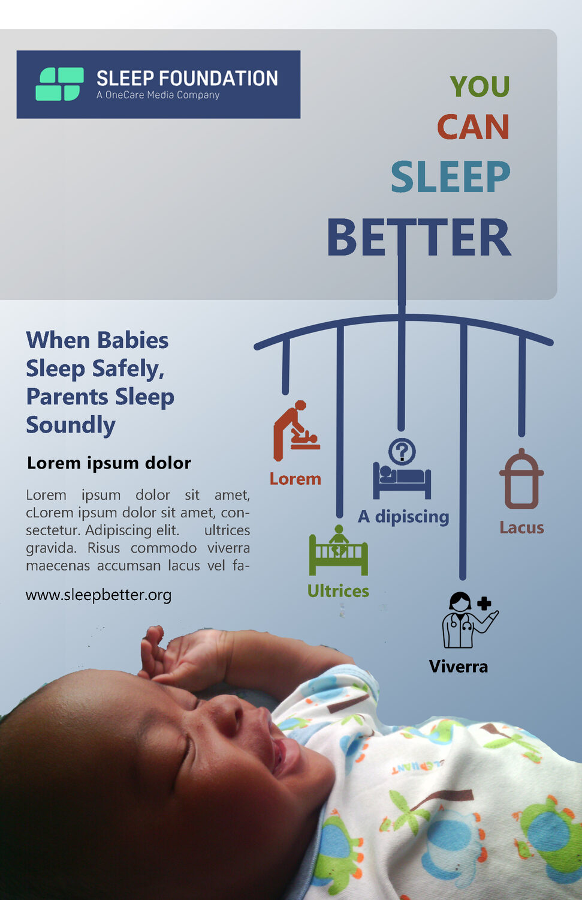
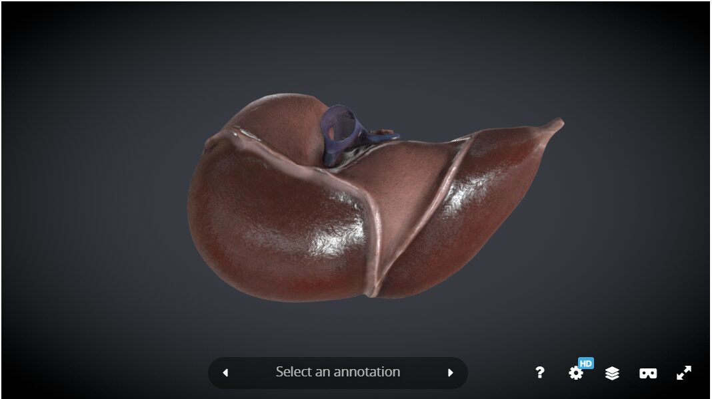
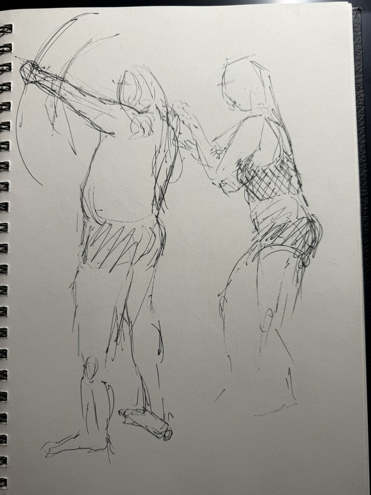
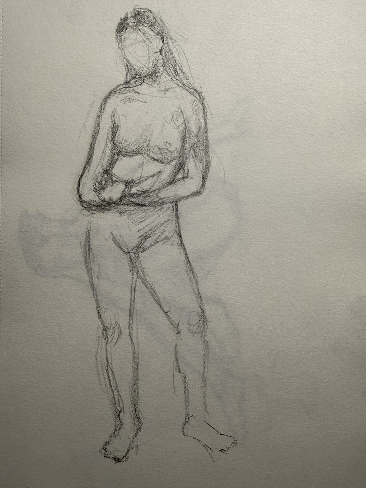
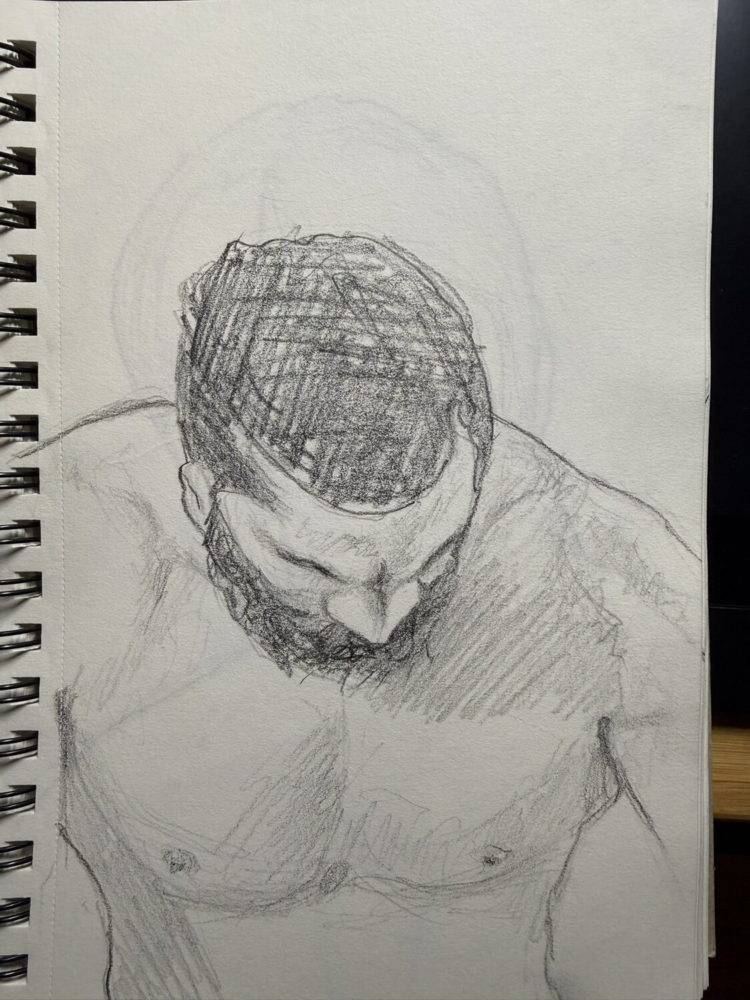
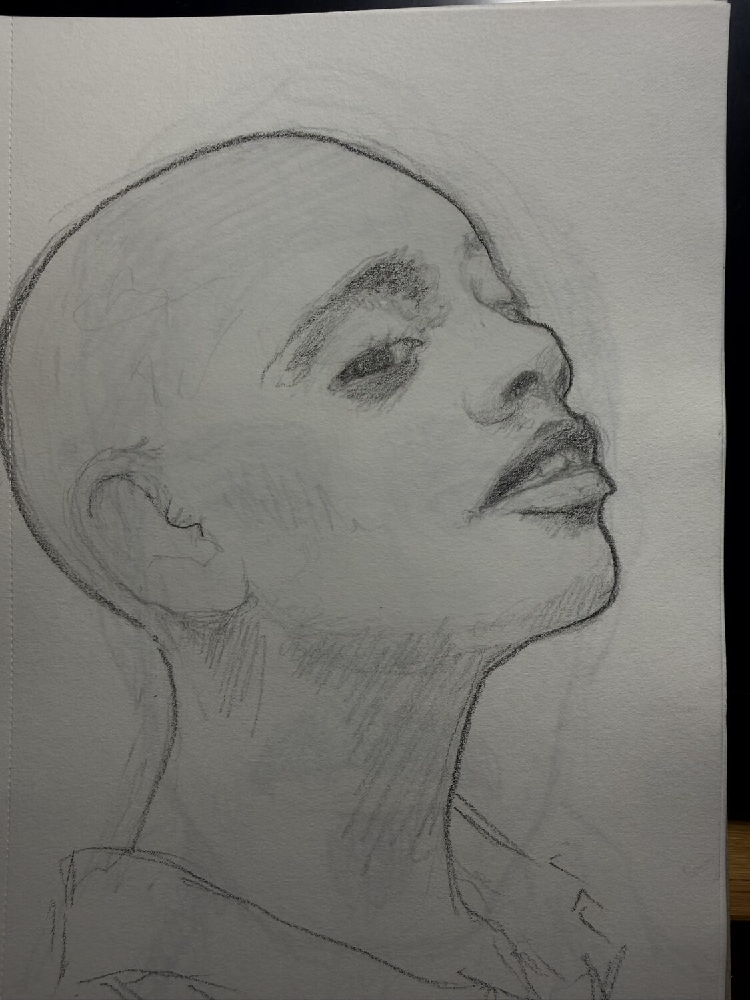
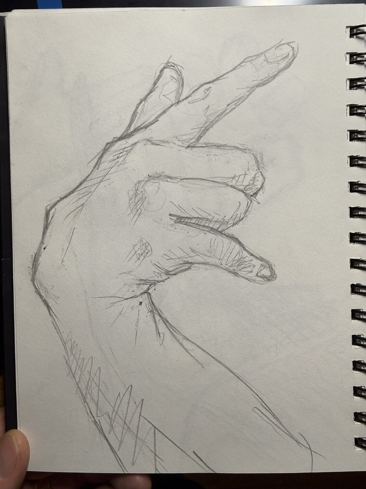
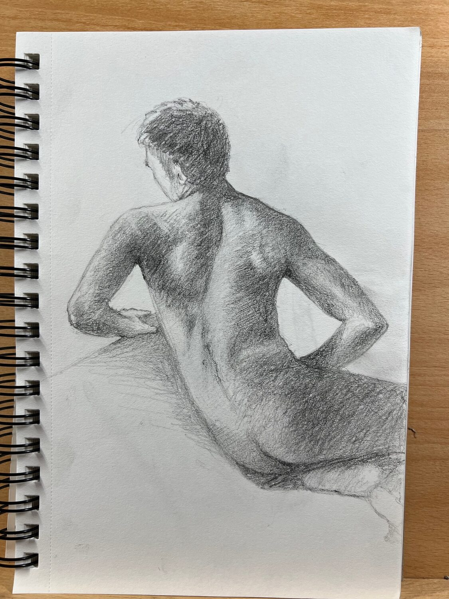
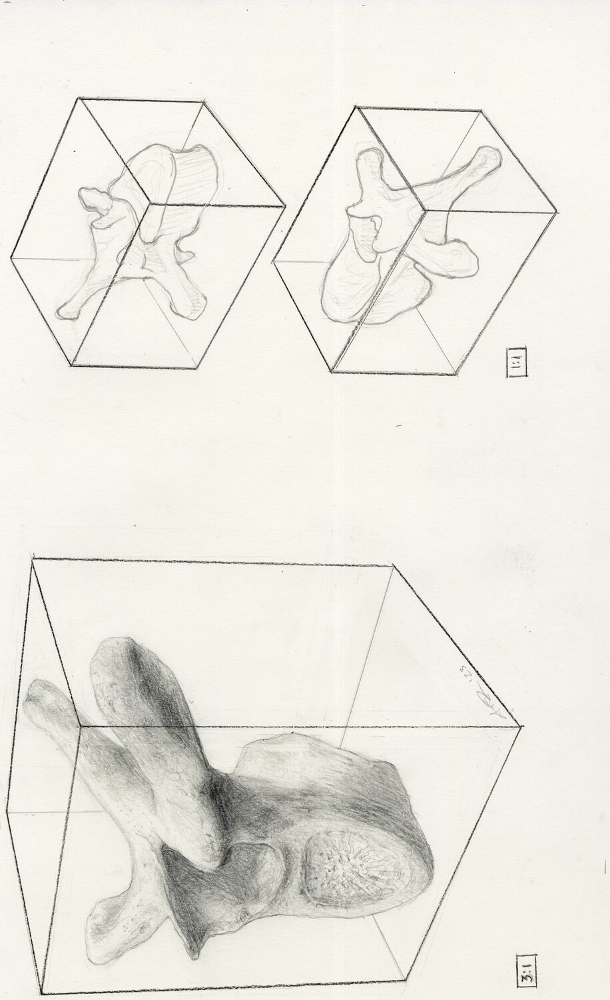
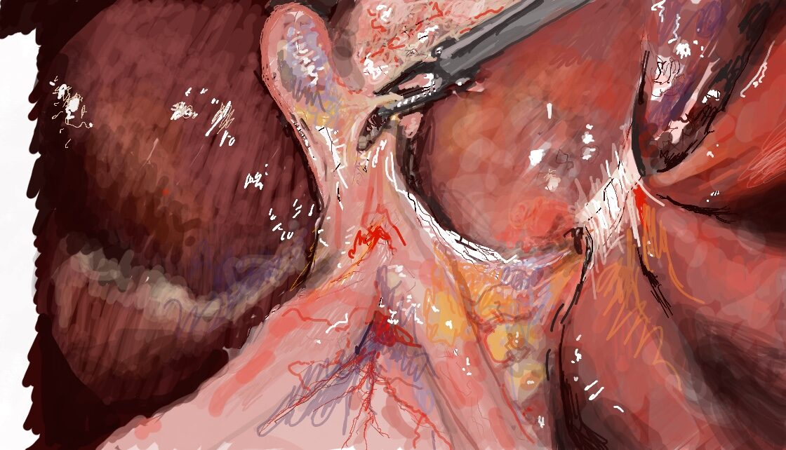

Alex Donnelly
Medical-Legal & Litigation Visualization · Medical Illustration · Trial Demonstratives
Highland Park, IL · (847) 338-8208 · a.james.donnelly@gmail.com · linkedin.com/in/alexjdonnelly
I am a visual artist and medical illustrator with graduate training in fine art, visual design, and biomedical visualization, and fifteen years working inside litigation. My work takes complex medical, scientific, and technical subjects and makes them clear and persuasive, the same problem at the center of trial graphics and demonstrative evidence. A selection is below.
Medical-Legal & Demonstrative Work
Explanatory graphics · procedure & device visualization





Anatomical & Medical Illustration
Systems, vasculature & structures





Figure Drawing & Studies
Foundational craft · observation & anatomy







